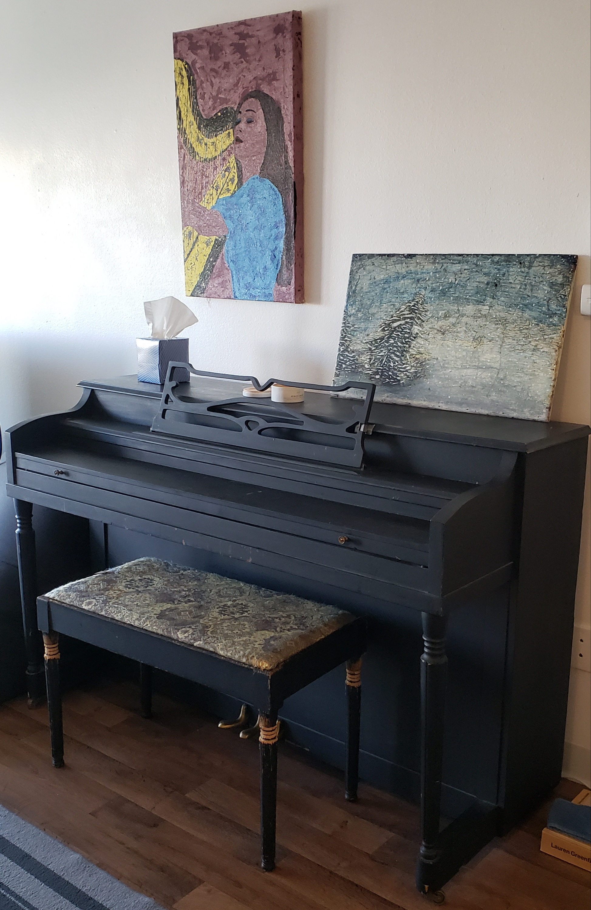

Friday, May 23rd 🎨 5:30pm - until paint is dry 🎨 Doug's Place
A previous owner of my piano hastily covered it in a matte black finish that has been scratched up over time. I'd like to believe that black finish was an improvement from the layer below. What if we tried to give the piano another layer of love!?
I want to get as many people over as possible to add their own beatuiful personal contribution to the piano! Perhaps that's a Koala playing the flute! Maybe it's a lovely pattern! I can tell you what it is not though! We are not adding phallic drawings for this event! And for those that want to say "oh I'm not artistic I can't paint/draw". Yes you can, that is a lie pushed on to us by big corporation. Yes you, YOU, have something beautiful to add!
I'm going to try to have some acrylic paint and brushes and some paper to put down around the piano to keep the walls and floor clean. I'd appreciate contributions though! If you want to bring some more paint or brushes or maybe contribute some food/beverage to make it more of a potluck I would be thrilled!
Please add a sketch and comment below if you can contribute! Message me for my address if you don't already have it! Invite yor friends! +1s Welcome!